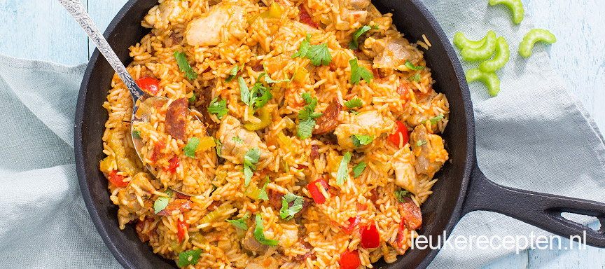

Jambalaya met kip
Deze Amerikaanse variant van paella met rijst, kip en bleekselderij is heerlijk op smaak gebracht met chorizo en cajun.
Ingrediënten
- 500 gr kippendijen
- 250 gr basmati rijst
- 80 gr chorizo (in plakjes)
- 1 ui
- 1 teen knoflook
- 2 tomaten
- 1 theelepel cajunkruiden
- 500 ml kippenbouillon
- 1 paprika
- 1 eetlepel tomatenpuree
- 3 stengels bleekselderij
- snuf paprikapoeder
- verse peterselie
Bereidingswijze
- Snipper de ui en knoflook en fruit deze aan in een grote (wok)pan.
- Snijd de kip in stukjes en voeg toe een bak rondom aan.
- Voeg de cajunkruiden en paprikapoeder toe.
- Snijd de paprika en tomaten in blokjes en de bleekselderij in plakjes. Voeg deze groenten samen met de chorizo toe aan de kip.
- Voeg een eetlepel tomatenpuree toe en bak even mee. Schep de ongekookte rijst er door en giet dan de bouillon er bij.
- Laat het mengsel ongeveer 15 minuten zachtjes pruttelen tot de rijst gaar is en het water is opgenomen.
- Garneer de Jambalaya met verse peterselie en serveer eventueel met een schijfje citroen.
- Vervang de kip ook eens door 300 gr garnalen.
